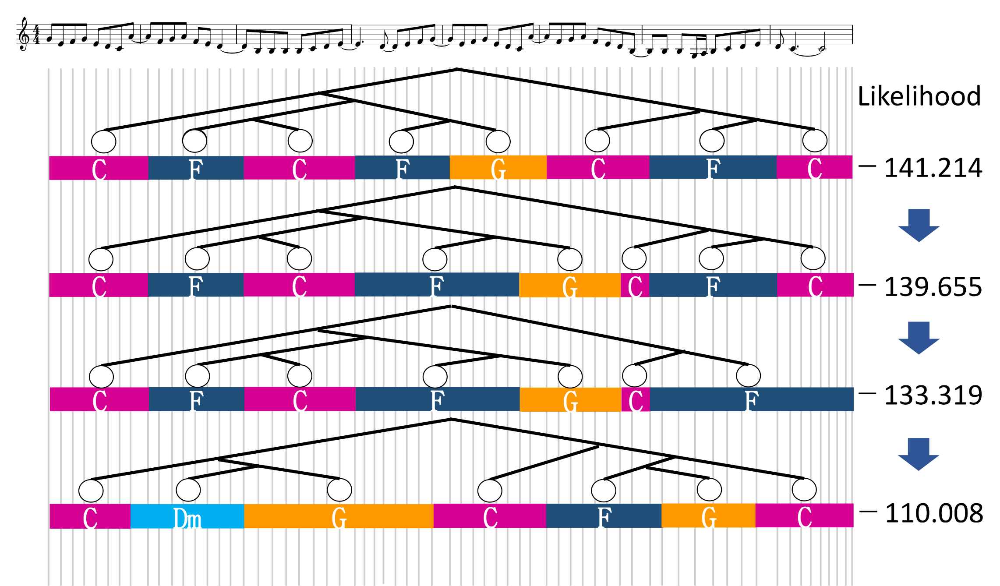

This is the accompanying web page for the following paper:
Function- and Rhythm-Aware Melody Harmonization
Based on Tree-Structured Parsing
and Split-Merge Sampling of Chord Sequences
—Submitted to ISMIR 2017
Abstract
This paper presents an automatic harmonization method that generates a
musically-meaningful chord sequence for a given melody (sequence of musical
notes). A standard way is to use hidden Markov models (HMMs) that represent
chord transitions on a regular time grid (e.g., bar or beat grid). This
approach, however, cannot handle the rhythms, harmonic functions (e.g., tonic,
dominant, and subdominant), and hierarchical repetitive structures of chords,
which are all important for melody harmonization. To overcome this limitation,
we formulate a hierarchical generative model of melodies that consists of (1) a
probabilistic context-free grammar (PCFG) for a chord sequence with functions,
(2) a metrical Markov model describing chord rhythms, and (3) a Markov model
that generates a melody from a chord sequence. To estimate a chord sequence
with a variable length and rhythm for a given melody, we iteratively refine the
latent tree structure and the labels and durations of chords by using a
Metropolis-Hastings sampler with split-merge operations. Experimental results
showed that the proposed method outperformed the HMM-based harmonizer in terms
of predictive ability and musical appropriateness.
Experimental Results

The figure above shows how the proposed MH sampling method with split-merge operations worked for automatic harmonization. The number of kinds of non-terminal symbols, K, was set to 12. A musical score at the top of the figure shows an initial sample in which the chord labels were optimized by using the Viterbi algorithm, but the chord onsets were located at the bar lines at the beginning of sampling. The second score shows a sample proposed by moving the onset positions of 5th and 6th chords (G major and C major). The third score shows a sample proposed by merging the 7th and 8th chords (F major and C major) into one chord (C major). The bottom score shows the best sample that maximizes the likelihood for the given melody. In each of the processes, the likelihood increased after refining variables. The result indicates that proposed method can successfully generate a musically-meaningful variable-length sequence of chords by considering the latent tree structure behind the chord sequence.